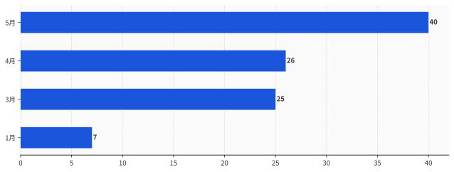
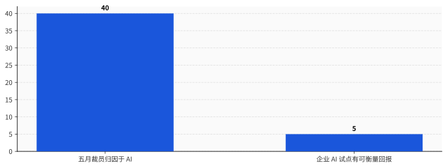

一、先把这个 40% 的口径看清楚：它测的是"老板说的"，不是"AI 干的"
在你把自己或同事的遭遇算进那 40% 之前，得先搞清楚这个数字是怎么数出来的。因为它的数法，和你以为的不一样。
Challenger 这份报告，是美国就业市场被引用最多的月度裁员追踪之一。但它有一个关键的统计方式，绝大多数转发的人没注意到。
它按企业自己上报的理由给裁员分类。
公司宣布裁员，会给一个说法——需求下滑、成本控制、并购重组、关厂。Challenger 把这些说法收集起来，归类计数。它统计的是"公司说的原因"，不是独立调查出来的"真实原因"。
更要命的是时间。Challenger 把"人工智能/技术更新"单独列成一个裁员理由的类别，是 2023 年才开始的事。
也就是说，"AI 裁员"这个统计口径本身，到今天只有三岁。
一个三岁的口径，记录的是公司自己愿意说出口的话。这两点叠在一起，意味着那个 40%，严格来说只能读成一句话：五月被裁的人里，有 40% 的人，他们的老板在对外解释时选择了把 AI 摆在台面上。
至于这些岗位是不是真被 AI 干掉的，这份数据不负责回答，也回答不了。

发布数据的人自己也按住了刹车。Challenger 公司的高级副总裁 Andy Challenger，在报告里说了一句和那些狂转的标题完全不一样的话。他说，在那些 AI 头条之外，他们还看到并购相关的裁员急升、破产相关的岗位损失跳增，"这告诉我，企业正在为一场 AI 驱动的经济做激进的重组"。
同一份报告里，他还专门补了一句：这还不是一场 jobpocalypse——就业末日还没到。
数据的生产者，比转发数据的人冷静得多。他知道并购和破产同期也在飙，他知道"激进重组"是个比"AI 取代人类"复杂得多的东西。
自报的理由，和真实的因果，是两件事。
而当一个理由对公司有好处的时候，这个理由的自报率，会自己往上滚。
至于这个"好处"具体是什么，下一节有答案。
二、为什么老板都爱把锅甩给 AI：这是对投资者最友好的裁员理由
同一笔裁员，有两种说法。
第一种：我们之前招多了，需求没起来，业务判断失误，现在要纠偏。第二种：我们上了 AI，效率提上来了，这部分人力不再需要。
裁的是同一批人，省的是同一笔钱。但这两句话在财报电话会上的效果，是反的。
布鲁金斯学会的高级研究员 Molly Kinder 把这件事说得很直接。她说，把裁员归因到 AI，是"对投资者极其友好的说辞"——它能把一条本该难看的负面新闻，包装成一家公司"前瞻、高效、拥抱未来"的创新成就。
第一种说法，是在承认管理层错了，股价要为管理失误买单。第二种说法，是在宣告管理层赢了，股价要为技术领先付溢价。
理由不要钱，AI 真干活才要钱。
一句"我们用 AI 提效了"，不需要你真的部署成功任何东西，不需要你拿出任何回报数字，它在新闻稿里是免费的。而真把 AI 接进生产流程、让它顶替掉一个岗位的活，要砸算力、要踩坑、要数月调试，那是真金白银。
便宜的先量产，太正常了。
最狠的一刀，来自这门生意里最没理由拆台的那个人。
2026 年初的一场峰会上，Sam Altman——OpenAI 的 CEO，这个星球上最大的 AI 既得利益者——说了一句很不像他立场的话。他说，几乎每一家裁员的公司，现在都在把锅甩给 AI，不管这件事到底跟 AI 有没有关系。
你品一下这个画面。一个卖铲子的，公开说大部分买铲子的人其实没在挖金子，只是举着铲子拍了张照，发给投资人看。
连供给端都不愿意为这个叙事兜底。这句话的分量，比任何一个唱反调的经济学家都重。
这不是抽象推断。2026 年 5 月 31 日，Fortune 的一篇报道直接点了名：Wix、Block、Snap、Atlassian，被列为用 AI 叙事裹挟裁员的代表。把视野放到一季度，Oracle 裁了约 3 万人，Amazon 约 1.6 万，Snap 约一千。
这些数字背后还有一个绕不开的压力源。Meta、Amazon、Google、微软这几家，2026 年一年的 AI 基础设施投入合计约 6500 亿美元。这么大的窟窿要填，薪资是企业账本上最大也最好动的那块可控成本。
裁人省下的钱，要去喂 GPU。而对外，这场为 AI 自筹资金的收缩，最好讲成一个被 AI 推动的故事。
省钱的动作，和讲故事的话术，刚好咬合。
可万一这个故事是真的呢？万一 AI 真的在大规模顶替人？
那就得把第二条曲线，摆上桌了。
三、把第二条曲线放上来：AI 被甩锅的速度，远超它赚钱的速度
如果 AI 真在大规模顶替人，那它至少得先证明自己干得了这活，而且干得划算。
可现有的产业数据，指向相反的方向。
麻省理工 NANDA 项目的调研给出一个被反复引用的数字：95% 的企业生成式 AI 试点项目，没有带来任何可衡量的回报。Gartner 的研究补了另一刀：以自动化为由裁员的公司，不管 AI 有没有真正产生收益，都照裁不误；其中约 73% 没有获得财务净收益。
一边是"因为 AI 裁人"的占比，半年从 7% 冲到 40%。另一边是"AI 真的赚到钱"的比例，趴在地上动都不动。
这不是说没有公司真把 AI 用出了回报。有，而且以后会更多。但"少数公司真靠 AI 划算地省下了人力"，和"四成裁员都是 AI 干的"，是差着一个量级的两句话。后者要成立，需要前者变成普遍现象的证据——而这个证据，现在还不在桌上。

更说明问题的，是裁完之后发生的事。
人力资源机构 Robert Half 的数据显示，约 29% 的企业，在用 AI 替换掉某些岗位之后，又悄悄把人请了回来。Forrester 那边给出的后悔率更高，过半。
这件事在业内有个外号，叫"AI 回旋镖"——你以为甩出去再也不用管了，结果它转一圈又飞回你脸上。
把这两组数据缝在一起，整个闭环就出来了。
第一步，公司用"AI"这个理由裁人。这一步成本是零，理由是免费的，还能换股价上涨。
第二步，AI 顶不上那个岗位真正要干的活，于是公司悄悄回聘。这一步成本是真的——重新招聘的费用、空窗期的损失、还有那个被裁了又被叫回来的人，再也不会真心给你卖命。
免费的那一步先发生，所以被 Challenger 统计成了"AI 裁员"。昂贵的那一步后发生，藏在几个月后的招聘预算里，不上任何头条。
回旋镖飞回来的成本，就是这场叙事真正的账单。只不过它结算得晚，而且没人替它发新闻稿。
AI 第一次让借口比产品先量产。理由这条生产线，已经开到 40% 的产能；产品那条生产线，良率还卡在 5%。
到这儿，结论好像很清楚了：这 40% 大半是虚的，AI 根本没在大规模抢工作。
但如果你就这么收尾，会掉进一个更隐蔽的陷阱。
因为这个数字底下，藏着一个完全反方向的真相。
四、反方向的真相：AI 真正的伤害，根本不在裁员公告里
斯坦福数字经济实验室主任 Erik Brynjolfsson，带队做了一项研究，名字起得很冷：《煤矿里的金丝雀》。
他们扒的不是裁员公告，而是更底层的就业数据。结论是：22 到 25 岁、处在 AI 高暴露岗位（软件开发、客服这类）的年轻人，从 2022 年底开始，就业相对水平下滑了 13%；论文更新后，这个数字扩大到 16%。而同样岗位上年纪更大的人，就业是稳的，甚至在涨。
这里发生的事，和"裁员"压根不是一回事。
Brynjolfsson 的观点很明确：企业对付年轻人的方式，不是降薪，也不是裁，是根本不招。门没关，但门口不再排新人。
而"停止招聘"这件事，永远不会出现在 Challenger 的裁员统计里。没有裁员公告，没有理由上报，没有一个数字会因为"某家公司今年少招了 200 个应届生"而跳动。
这就是为什么洗白论有个危险的副作用。
如果你看完前三节，得出"AI 裁员都是甩锅，AI 其实没动多少工作"，你会低估 AI 对就业的真实冲击。因为真实的冲击不在你能看见的地方。它不在裁员公告里，它在那些根本没发出去的招聘启事里。
被裁的人，至少还上了一份统计、领了一笔遣散费、有个公开的说法。而那个本来今年该被录取、却因为公司"反正以后让 AI 干"而连面试都没拿到的应届生，连一个数字都不是。
所以这件事的真相是双向的，而且两个方向并不矛盾。
整体那个 40%，被叙事吹高了——这是第一到第三节的事。入门级岗位的真实塌陷，被统计漏掉了——这是这一节的事。
头条上的数字虚高，门背后的停招被低估。
Anthropic 自己发布的经济指数，给这个双向真相补了一个微妙的注脚。它统计自家 Claude 上的真实用法，发现"增强人类"的用法（52%）已经反超了"替代人类"的用法（45%）——多数人是拿它当协作工具，不是替身。但同一份报告也指出，在编码这一个具体领域，用法正在从"增强"明显往"自动化"迁移。
整体上 AI 还是个助手，但在某些具体工种上，它正在从助手变成替代。22 到 25 岁那批人，恰好站在最先发生迁移的那几个工种门口。
所以这 40%，既不是全真，也不是全假。
它真正的问题是：它把账算错了对象。
五、"是 AI 干的"这句话，谁在收钱，谁在买单
一句"是 AI 干的"，凭空造出了三个赢家。
第一个赢家是 CFO。裁员从一桩需要解释的管理失误，变成一项不需要担责的技术升级。预算照砍，骂名免了。
第二个赢家是股价。同样一份裁员名单，挂上"成本失控"的标签会跌，挂上"AI 转型"的标签会涨。叙事一换，市值方向就换。
第三个赢家是整个管理层。本来是一连串具体的人做出的具体选择——招多了、押错了赛道、扩张太猛——现在被打包成一句"这是技术大势所趋"。系统性的人为决策，被伪装成了不可抗的技术宿命。
布鲁金斯的 Molly Kinder 把这层点破了：归因 AI，本质是一种权力叙事。它让做决定的人，不必为自己的决定负责。
赢家清楚了，那买单的是谁。
第一个买单的，是被裁的人。他本来是公司过度扩张的纠偏对象，现在却被盖上一个"你被 AI 取代了"的章。这个章比"公司经营不善"难受得多——前者像是被时代淘汰，后者好歹是公司的错。明明是别人赌输了，账却记在他的能力上。
第二个买单的，是那批 22 到 25 岁的年轻人。他们的处境最分裂：一方面，他们是 AI 就业冲击里最真实的受害者，斯坦福那条 13% 到 16% 的曲线就是他们；另一方面，他们又是这套叙事最好用的道具——"看，AI 连初级岗都能干了"这句话，需要他们的消失来当证据。
真受害，又被当成宣传素材。这是这代人最憋屈的地方。
公众其实已经闻出味来了。2026 年 6 月的一项调查显示，87% 的美国人认为，在机器决定裁掉一个人之前，应该有一个活人来签字负责。
这个 87% 翻译过来就是一句话：大家不反对 AI 提效，大家反对的是"AI 让我们这么做的"这种甩锅。当一项裁员决定的责任，可以被推给一个不会上法庭、不会被问责、连工资都不领的算法，那这个决定就没有人需要负责了。
当"是 AI 干的"成了免责声明，AI 就从一个工具，变成了一个替人挨骂的神。
而供奉这个神，不要钱。
六、下次再看到"AI 裁员"，把它当成一份需要审计的财务声明
知道了这些，作为一个会被这条新闻砸到的普通人，能做的其实很具体。
下次再刷到"某公司因 AI 裁员 X 千人"，别急着转发"狼来了"，也别急着骂 AI。先把这句话当成一份对外披露的财务声明，问它三个问题。
第一，ROI 呢？这家公司有没有拿出任何可衡量的 AI 回报数字？还是只有一个"提效"的形容词？没有数字的提效，约等于没有。
第二，回聘率呢？三个月、半年之后，回头看看它有没有把人悄悄请回来。回旋镖飞回来的那天，才是这场叙事的对账日。
第三，这活 AI 现在真能干，还是公司在赌它以后能干？沃顿商学院的管理学教授 Peter Cappelli 早就点破了这个顺序——很多公司是先把人裁了，再指望 AI 接上，"可它们还没做到，只是在赌"。先裁人后指望，和先验证后替代，是完全不同的两件事。
这三个问题，把"是 AI 干的"从一句不可证伪的技术宣言，还原成一笔可以核对的账。
也回到开篇那两条曲线。它们什么时候并轨——归因于 AI 的比例，和 AI 真正产生回报的比例，哪天真的靠拢了——哪天我们再谈"狼来了"不迟。
在那之前，那个 40%，主要测量的不是 AI 的能力，是一整个行业讲故事的能力。
这是 AI 历史上很奇特的一刻。一项技术，还没普遍证明自己能替人干活，就已经先被普遍用作了不干活的理由。
它最先实现规模化的，不是生产力。
是甩锅。